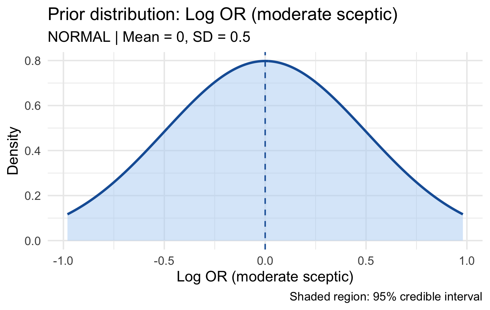
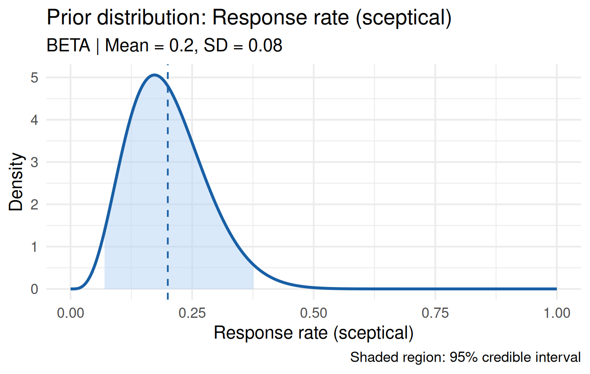
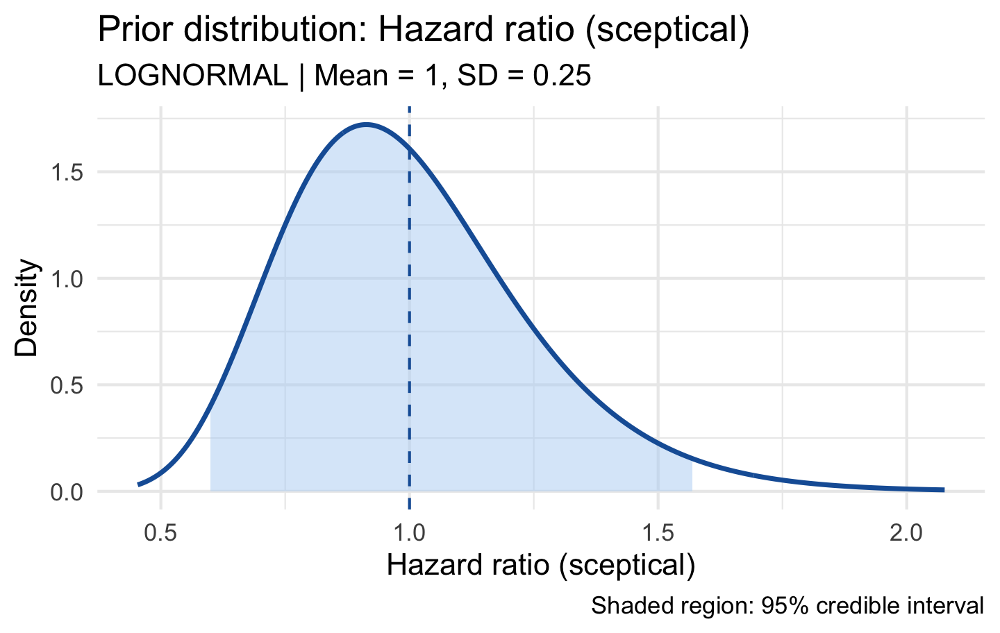
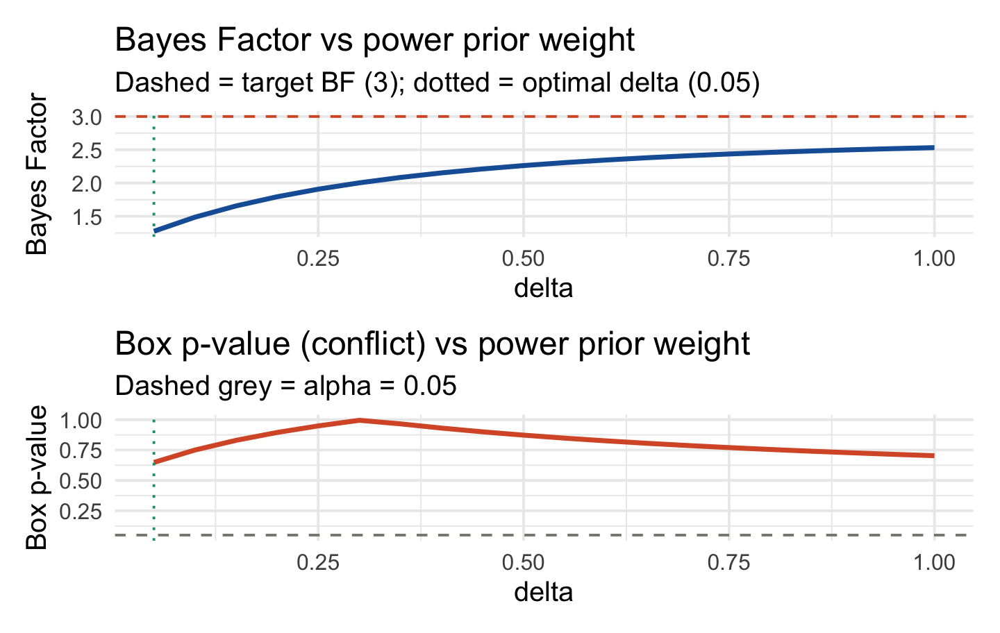

Beyond the elicited informative prior, regulatory submissions typically require one or more alternative prior specifications to demonstrate robustness. bayprior provides three well-established alternatives:
Prior type
Function
Method
Reference
Robust mixture
robust_prior()
Mixes informative + vague
Schmidli et al. (2014)
Sceptical
sceptical_prior()
Centred at null effect
Spiegelhalter et al. (1994)
Power prior
calibrate_power_prior()
Down-weights historical data
Ibrahim & Chen (2000)
Robust Mixture Prior
Concept
A robust prior protects against prior misspecification by mixing the informative elicited prior with a vague (diffuse) component:
The vague component — a wide Normal centred at the informative prior mean — ensures the posterior is never completely dominated by a conflicting prior. The default weight is \(w = 0.20\) (80% informative, 20% vague).
The sceptical prior (Spiegelhalter & Freedman, 1994) represents the view of a conservative regulator who is sceptical of a treatment effect. It is centred at the null value of the treatment effect with width calibrated to a chosen strength of scepticism.
This is the FDA’s recommended sensitivity prior for trials using informative priors: the trial conclusions should hold even under a prior that places most mass at “no effect.”
Normal Family (Mean Differences, Log Odds Ratios)
For continuous or log-scale quantities where the null is typically 0:
sc_weak <-sceptical_prior(null_value =0, family ="normal", strength ="weak",label ="Log OR (weak sceptic)")sc_moderate <-sceptical_prior(null_value =0, family ="normal", strength ="moderate",label ="Log OR (moderate sceptic)")sc_strong <-sceptical_prior(null_value =0, family ="normal", strength ="strong",label ="Log OR (strong sceptic)")cat("Weak SD: ", sc_weak$fit_summary$sd, "\n")#> Weak SD: 1cat("Moderate SD:", sc_moderate$fit_summary$sd, "\n")#> Moderate SD: 0.5cat("Strong SD: ", sc_strong$fit_summary$sd, "\n")#> Strong SD: 0.25
plot(sc_moderate)

The SD mapping by strength:
Strength
SD
Interpretation
weak
1.0
Vague scepticism — wide prior around null
moderate
0.5
2-SD departure from null has ~5% prior probability
strong
0.25
Very concentrated at null — very sceptical
Beta Family (Response Rates)
For binary endpoints, null_value must be in \((0, 1)\) — it represents the null response rate, not a difference:
# Null response rate of 20%: sceptic believes treatment is no better than 20%sc_beta <-sceptical_prior(null_value =0.20,family ="beta",strength ="moderate",label ="Response rate (sceptical)")plot(sc_beta)

Log-Normal Family (Hazard Ratios)
For hazard ratios, the null is HR = 1, which corresponds to null_value = 0 on the log scale:
sc_hr <-sceptical_prior(null_value =0, # log(1) = 0, i.e. HR = 1family ="lognormal",strength ="moderate",label ="Hazard ratio (sceptical)")plot(sc_hr)

Enthusiastic vs Sceptical Pair
The FDA recommends presenting conclusions under both an enthusiastic prior (favouring treatment benefit) and a sceptical prior:
enthusiastic <-elicit_beta(mean =0.45, sd =0.08,method ="moments", label ="Response rate (enthusiastic)")sceptical <-sceptical_prior(null_value =0.20, family ="beta", strength ="moderate",label ="Response rate (sceptical)")data_obs <-list(type ="binary", x =18, n =40)post_enth <- bayprior:::.conjugate_update(enthusiastic, data_obs)post_scep <- bayprior:::.conjugate_update(sceptical, data_obs)cat("Posterior mean (enthusiastic):", round(post_enth$fit_summary$mean, 3), "\n")#> Posterior mean (enthusiastic): 0.45cat("Posterior mean (sceptical): ", round(post_scep$fit_summary$mean, 3), "\n")#> Posterior mean (sceptical): 0.356cat("Posterior SD (enthusiastic): ", round(post_enth$fit_summary$sd, 3), "\n")#> Posterior SD (enthusiastic): 0.056cat("Posterior SD (sceptical): ", round(post_scep$fit_summary$sd, 3), "\n")#> Posterior SD (sceptical): 0.059
Power Prior
Concept
The power prior (Ibrahim & Chen, 2000) provides a principled method for incorporating historical data by down-weighting it by a factor \(\delta \in (0, 1]\):
where \(D_0\) is the historical data and \(\delta\) controls how much weight it receives. \(\delta = 1\) fully incorporates the historical data (standard Bayesian updating); \(\delta \to 0\) ignores it entirely.
Calibrating \(\delta\)
calibrate_power_prior() selects \(\delta\) to achieve a target Bayes Factor between the historical-data-informed prior and the current likelihood — ensuring the historical data is incorporated only to the extent it is compatible with current data:
base <-elicit_beta(mean =0.50,sd =0.20,method ="moments",label ="Response rate")calib <-calibrate_power_prior(historical_data =list(type ="binary", x =12, n =40),current_data =list(type ="binary", x =18, n =50),base_prior = base,target_bf =3,delta_grid =seq(0.05, 1.0, by =0.05),method ="bayes_factor")print(calib)#> #> -- Power Prior Calibration --#> • Method : bayes_factor#> • Target BF : 3#> • Optimal delta : 0.05#> • Power prior mean: 0.4448#> • Power prior SD : 0.173
plot(calib)

The calibration curves show:
Top panel: Bayes Factor vs \(\delta\). The dashed red line is the target BF; the dotted green line marks the optimal \(\delta\).
Bottom panel: Box p-value vs \(\delta\). Values below 0.05 indicate conflict at that weight.
Compatibility Method
Alternatively, select \(\delta\) to be the largest value for which the historical-data-informed prior shows no conflict with the current data:
calib_compat <-calibrate_power_prior(historical_data =list(type ="binary", x =12, n =40),current_data =list(type ="binary", x =18, n =50),base_prior = base,method ="compatibility",delta_grid =seq(0.05, 1.0, by =0.05))cat("Optimal delta (BF method): ", calib$delta_opt, "\n")#> Optimal delta (BF method): 0.05cat("Optimal delta (compatibility method):", calib_compat$delta_opt, "\n")#> Optimal delta (compatibility method): 1
Power Prior for Other Families
Power prior updating is supported for Beta, Normal, Gamma, Log-Normal, and Mixture priors. For a Normal prior with continuous historical data:
base_norm <-elicit_normal(mean =0.0, sd =0.5,method ="moments", label ="Mean difference")calib_norm <-calibrate_power_prior(historical_data =list(type ="continuous", x =0.35, sd =0.3, n =60),current_data =list(type ="continuous", x =0.42, sd =0.3, n =80),base_prior = base_norm,target_bf =3,delta_grid =seq(0.05, 1.0, by =0.10),method ="bayes_factor")print(calib_norm)#> #> -- Power Prior Calibration --#> • Method : bayes_factor#> • Target BF : 3#> • Optimal delta : 0.95#> • Power prior mean: 0.3478#> • Power prior SD : 0.0396
Choosing the Right Alternative Prior
library(knitr)kable(data.frame(Situation =c("No conflict, regulatory requirement","Mild conflict detected","Severe conflict detected","Historical data available","FDA enthusiastic/sceptical pair required" ),`Recommended prior`=c("Robust mixture (w = 0.20)","Robust mixture (w = 0.30-0.40)","Sceptical prior (moderate-strong)","Power prior (calibrated)","Sceptical prior as second arm" ),check.names =FALSE), align ="ll")
Situation
Recommended prior
No conflict, regulatory requirement
Robust mixture (w = 0.20)
Mild conflict detected
Robust mixture (w = 0.30-0.40)
Severe conflict detected
Sceptical prior (moderate-strong)
Historical data available
Power prior (calibrated)
FDA enthusiastic/sceptical pair required
Sceptical prior as second arm
Including Robust Priors in the Regulatory Report
All three robust prior types — robust mixture, sceptical, and power prior — are automatically included in the downloaded prior justification report when they have been computed in the session. Pass them directly to prior_report():
# After running the analyses above...prior_report(prior = prior,conflict = cd,sensitivity = sa,robust_prior = rob, # adds "Robust Mixture" section to reportsceptical_prior = scep, # adds "Sceptical Prior" section to reportpower_prior = calib, # adds "Power Prior" section with calibration tableoutput_format ="html",output_file ="prior_justification_report",trial_name ="TRIAL-001",sponsor ="BioPharma Ltd",author ="J. Smith, Biostatistician")
Each section in the report includes a parameter summary table and the corresponding density or calibration plot. The compliance checklist in the report automatically marks “Robust / sceptical prior computed” as Complete when any of the three types is supplied.
When using the Shiny app, the robust priors flow into the report automatically — simply run the analyses in the Robust Priors panel before clicking Download Report.
Note:prior_report() requires devtools::install(), not just devtools::load_all(). Quarto spawns a fresh R session that requires the package to be properly installed.
References
Ibrahim, J. G. & Chen, M.-H. (2000). Power prior distributions for regression models. Statistical Science, 15, 46–60.
Schmidli, H., Gsteiger, S., Roychoudhury, S., O’Hagan, A., Spiegelhalter, D., & Neuenschwander, B. (2014). Robust meta-analytic-predictive priors in clinical trials with historical control information. Biometrics, 70, 1023–1032.
Spiegelhalter, D. J., Freedman, L. S., & Parmar, M. K. B. (1994). Bayesian approaches to randomized trials. Journal of the Royal Statistical Society A, 157, 357–416.
Gravestock, I. & Held, L. (2017). Adaptive power priors with empirical Bayes for clinical trials. Pharmaceutical Statistics, 16, 349–360.